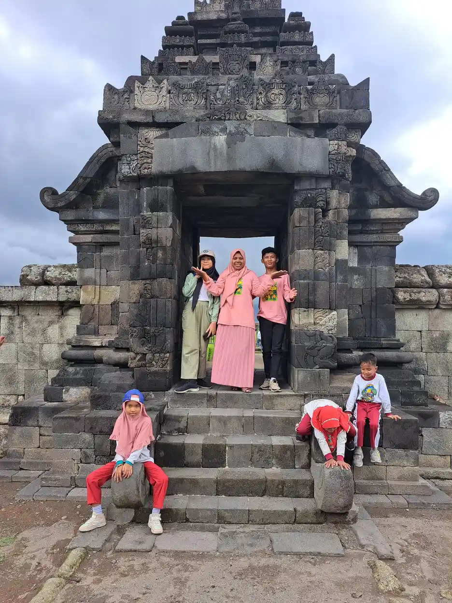
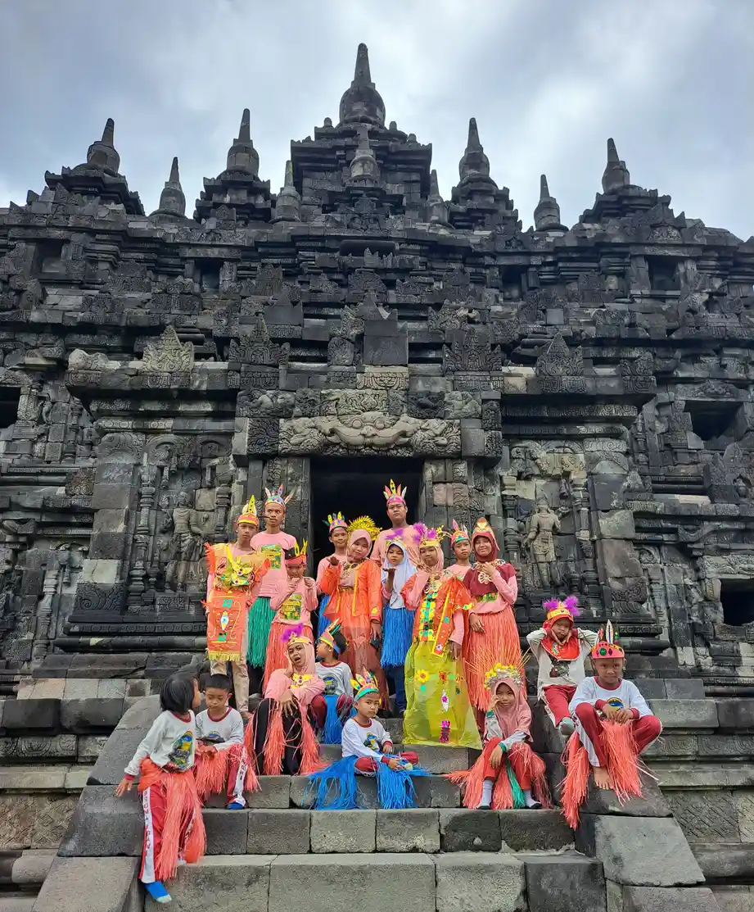
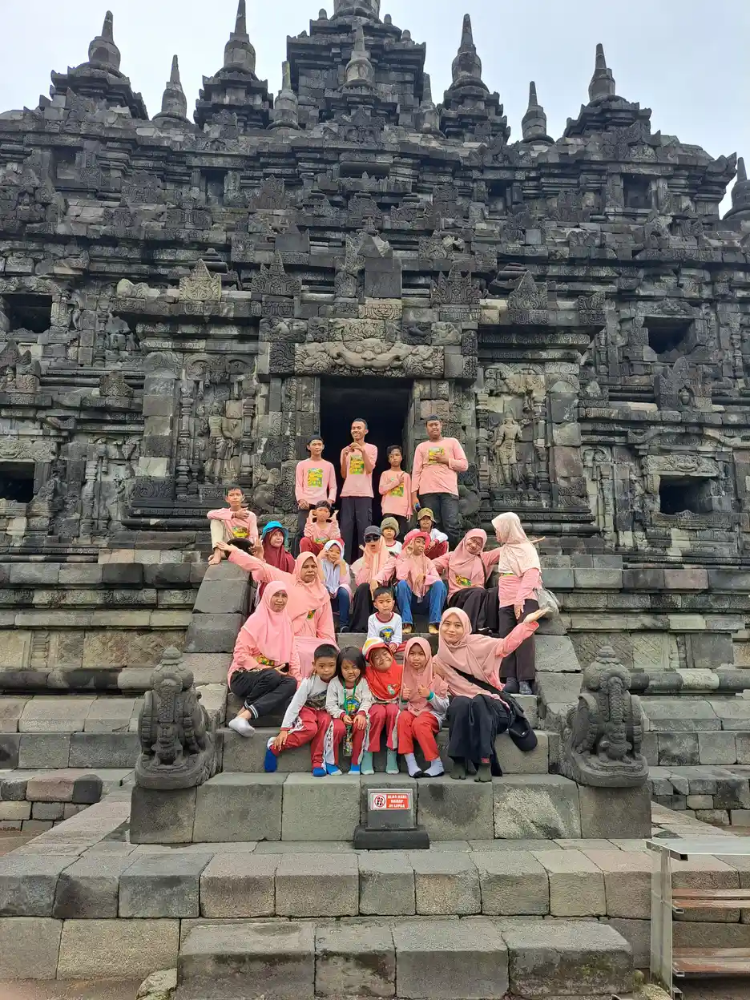
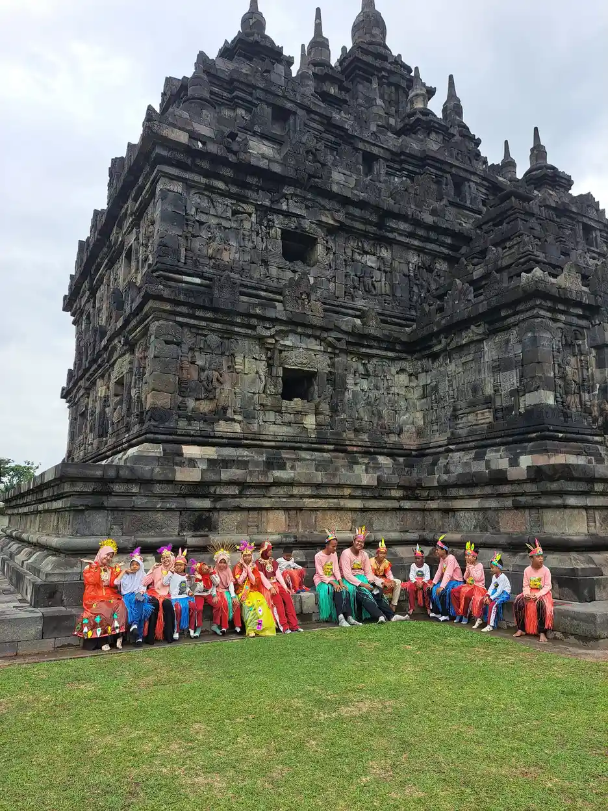

Jawaban singkat: tanda keterlambatan motorik halus adalah kemampuan tangan dan jari yang belum muncul pada usia ketika sebagian besar anak sudah melakukannya. Contohnya bayi yang masih terus mengepal setelah 4 bulan, belum menjumput benda kecil dengan ibu jari dan telunjuk di usia 1 tahun, belum mencoret di usia 18 bulan, atau masih menggenggam krayon dengan kepalan di usia 4 tahun. Satu tanda saja cukup menjadi alasan untuk berkonsultasi, karena penanganan yang dimulai lebih awal memberi hasil lebih baik.
Daftar Isi
- Apa yang dimaksud keterlambatan motorik halus?
- Tanda di usia 0 sampai 12 bulan
- Tanda di usia 1 sampai 3 tahun
- Tanda di usia 3 sampai 5 tahun dan awal sekolah
- Tabel ringkasan tanda per usia
- Kapan harus ke dokter?
- Penyebab yang umum ditemukan
- Bagaimana asesmen dilakukan?
- Peran terapi okupasi
- Dukungan di rumah
- Dukungan di sekolah
- Pertanyaan yang sering diajukan
Apa yang Dimaksud Keterlambatan Motorik Halus?
Motorik halus adalah kemampuan memakai otot kecil di tangan dan jari, yang bekerja sama dengan mata, untuk meraih, menggenggam, menjumput, memutar, mencoret, hingga menulis. Penjelasan lengkap tentang pengertian dan komponennya ada di artikel induk kami, motorik halus adalah. Artikel ini berfokus pada satu pertanyaan yang sering membuat orang tua cemas: tanda apa yang menunjukkan kemampuan itu tertinggal dari usianya?
Ikatan Dokter Anak Indonesia (IDAI) membagi perkembangan anak ke dalam empat ranah, yaitu motor kasar, motor halus, bahasa atau bicara, dan personal sosial atau kemandirian. Keterlambatan bisa terjadi hanya pada satu ranah, atau pada dua ranah atau lebih yang disebut keterlambatan perkembangan umum (global developmental delay). Karena itu, kesulitan tangan tidak boleh dilihat terpisah dari kemampuan bicara, bermain, dan bergerak anak.
IDAI juga mengingatkan bahwa kisaran waktu pencapaian perkembangan cukup lebar, sehingga anak seusia wajar berbeda. Yang membedakan variasi normal dari keterlambatan adalah pola yang menetap, jumlah kemampuan yang belum muncul, hilangnya kemampuan yang dulu sudah bisa, dan adanya tanda bahaya tertentu. Penilaian akhirnya tetap di tangan tenaga kesehatan, bukan dari membandingkan anak dengan sepupu atau tetangga.
Tanda Keterlambatan Motorik Halus di Usia 0 sampai 12 Bulan
Pada tahun pertama, tangan bayi berubah dari kepalan refleks menjadi alat untuk menjelajah. Daftar tonggak perkembangan CDC (program Learn the Signs. Act Early.) memuat kemampuan yang dilakukan sebagian besar bayi pada usia tertentu. Bila kemampuan di bawah ini belum terlihat, catat dan bicarakan saat kunjungan ke dokter atau posyandu.
- Sekitar 4 bulan: sebagian besar bayi memegang mainan yang diletakkan di tangannya, mengayunkan lengan ke arah mainan, dan membawa tangan ke mulut.
- Sekitar 9 bulan: bayi umumnya memindahkan benda dari satu tangan ke tangan lain dan memakai jari untuk "menyapu" makanan ke arah dirinya.
- Sekitar 1 tahun: bayi biasanya menjumput benda kecil, seperti potongan makanan, dengan ibu jari dan telunjuk, serta minum dari cangkir tanpa tutup yang dipegangi orang dewasa.
Selain daftar CDC, IDAI menyebut beberapa tanda bahaya (red flags) motorik halus yang tidak perlu ditunggu: bayi masih menggenggam setelah usia 4 bulan, sudah dominan memakai satu tangan sebelum usia 1 tahun, perhatian penglihatan yang tidak konsisten, dan kebiasaan memasukkan mainan ke mulut yang masih sangat dominan setelah 14 bulan. Dominasi satu tangan terlalu dini patut diperhatikan karena bisa berarti tangan sisi lain kurang berfungsi.
Untuk bayi yang lahir prematur, American Academy of Pediatrics (AAP) menganjurkan memakai usia koreksi selama dua tahun pertama. Bayi yang lahir pada usia kehamilan 32 minggu dan kini berusia 4 bulan, misalnya, dinilai seperti bayi cukup bulan berusia 2 bulan. Cara ini mencegah kecemasan yang tidak perlu sekaligus tetap menjaga kewaspadaan. Panduan memahami tonggak usia ada di artikel apa itu milestone anak.

Tanda Keterlambatan Motorik Halus di Usia 1 sampai 3 Tahun
Di usia batita, tangan mulai dipakai untuk makan sendiri, bermain dengan tujuan, dan meniru orang dewasa. Rincian kemampuan per enam bulan sudah kami bahas di milestone motorik halus anak 1 sampai 3 tahun. Di sini kami merangkum yang perlu diwaspadai bila belum muncul, mengacu pada daftar CDC.
- 15 bulan: sebagian besar anak memakai jari untuk menyuapkan sebagian makanannya sendiri.
- 18 bulan: anak umumnya sudah mencoret-coret, makan dengan jari, dan mencoba memakai sendok.
- 2 tahun: anak biasanya makan dengan sendok, memegang sesuatu dengan satu tangan sambil tangan lain bekerja (misalnya memegang wadah dan membuka tutupnya), serta mencoba menekan tombol atau memutar kenop mainan.
- 30 bulan: anak umumnya memutar dengan tangan, seperti membuka tutup botol ulir atau kenop pintu, membalik halaman buku satu per satu, dan melepas sebagian pakaian longgar.
- 3 tahun: anak biasanya meronce benda besar seperti manik atau makaroni, memakai sebagian pakaian sendiri, memakai garpu, dan menggambar lingkaran setelah dicontohkan.
Perhatikan juga kualitas gerakannya, bukan hanya ada atau tidaknya. Anak yang selalu menghindari aktivitas tangan, tampak sangat cepat lelah ketika makan sendiri, memakai satu sisi tubuh saja, atau gerakannya tampak kaku dan tidak terkendali perlu diamati lebih saksama. IDAI memasukkan gerakan yang tidak seimbang antara sisi kiri dan kanan, gangguan tonus otot, dan gerakan yang tidak terkontrol ke dalam tanda bahaya motorik kasar, dan tanda seperti ini sering ikut memengaruhi kemampuan tangan.
Ingat bahwa kesempatan berlatih ikut berperan. Anak yang jarang diberi kesempatan memegang sendok atau krayon bisa tampak tertinggal. Setelah kesempatan diberikan secara rutin selama beberapa minggu tetapi kemampuannya tetap belum muncul, itulah saat yang tepat untuk berkonsultasi. Ide stimulasi yang aman ada di stimulasi motorik halus.
Tanda Keterlambatan Motorik Halus di Usia 3 sampai 5 Tahun dan Awal Sekolah
Menjelang sekolah, tuntutan pada tangan meningkat: menggambar, menggunting, mengancingkan baju, dan mulai menulis. Daftar CDC menunjukkan bahwa di usia 4 tahun sebagian besar anak sudah membuka sebagian kancing, mengambil makanan sendiri atau menuang air dengan pengawasan, menggambar orang dengan tiga bagian tubuh atau lebih, dan memegang krayon atau pensil di antara jari dan ibu jari, bukan dengan kepalan.
Di usia 5 tahun, anak umumnya sudah mengancingkan sebagian kancing dan menulis beberapa huruf dari namanya. Bila anak masih menggenggam alat tulis dengan kepalan penuh di usia 4 tahun, belum bisa membuka kancing sama sekali, atau menghindari semua kegiatan menggambar, hal itu layak dicatat dan didiskusikan.
Di kelas, tanda keterlambatan sering muncul dalam bentuk yang tidak langsung. Anak tampak lambat menyelesaikan tugas tulis, tulisannya sangat sulit dibaca, mudah frustrasi saat prakarya, menolak menggunting, atau perlu bantuan berlebihan untuk membuka bekal dan memakai sepatu. AAP mencatat bahwa kesulitan motorik halus dapat tampak sebagai kesulitan merawat diri seperti berpakaian, memakai sendok, dan menyikat gigi, serta kesulitan bermain seperti menyusun puzzle atau memakai gunting.
Anak usia sekolah dengan kesulitan tangan tidak berarti kurang cerdas atau malas. Sering kali anak memahami pelajarannya, tetapi tangannya belum mampu mengikuti kecepatan kelas. Membedakan hal ini penting agar anak tidak diberi label yang keliru. Perbandingan kemampuan tangan dan gerak tubuh besar dijelaskan di perbedaan motorik kasar dan halus.

Tabel Ringkasan Tanda Keterlambatan per Usia
Tabel berikut merangkum kemampuan tangan yang dicapai sebagian besar anak menurut daftar CDC, ditambah tanda bahaya dari IDAI. Gunakan tabel ini sebagai bahan percakapan dengan tenaga kesehatan, bukan sebagai alat diagnosis. CDC sendiri menegaskan bahwa daftar tonggak perkembangan bukan pengganti alat skrining perkembangan yang terstandar dan tervalidasi.
| Usia | Umumnya sudah bisa (CDC) | Perlu didiskusikan bila |
|---|---|---|
| 4 bulan | Memegang mainan yang diletakkan di tangan, membawa tangan ke mulut | Tangan masih terus mengepal (tanda bahaya IDAI) |
| 9 bulan | Memindahkan benda antartangan, menyapu makanan dengan jari | Belum memindahkan benda atau hanya memakai satu tangan |
| 1 tahun | Menjumput benda kecil dengan ibu jari dan telunjuk | Belum menjumput, atau sudah dominan satu tangan (tanda bahaya IDAI) |
| 18 bulan | Mencoret, makan dengan jari, mencoba memakai sendok | Belum mencoret sama sekali; eksplorasi mulut masih sangat dominan setelah 14 bulan (IDAI) |
| 30 bulan | Memutar tutup botol atau kenop, membalik halaman satu per satu | Belum dapat memutar atau membalik halaman |
| 3 tahun | Meronce benda besar, memakai garpu, menggambar lingkaran setelah dicontohkan | Belum meronce atau menghindari semua aktivitas tangan |
| 4 tahun | Memegang krayon di antara jari dan ibu jari, membuka sebagian kancing | Masih menggenggam alat tulis dengan kepalan |
| 5 tahun | Mengancingkan sebagian kancing, menulis beberapa huruf nama | Belum mampu mengancingkan atau menulis huruf apa pun |
Apa pun usianya, ada dua tanda yang berlaku umum: anak kehilangan kemampuan yang sebelumnya sudah bisa, atau kemampuan tangan tertinggal bersamaan dengan bicara, sosial, atau gerak tubuh. Keduanya merupakan alasan untuk segera menemui dokter, tidak cukup dengan menunggu dan melihat.
Kapan Harus ke Dokter?
Halaman CDC untuk orang tua yang khawatir tentang perkembangan anak menyampaikan pesan yang tegas: jangan menunggu. Bila anak belum mencapai satu atau lebih tonggak usianya, kehilangan kemampuan yang dulu sudah bisa, atau orang tua merasa ada masalah pada cara anak bermain, belajar, berbicara, bertindak, dan bergerak, bicarakan dengan dokter anak. IDAI menyampaikan hal serupa: bila menemukan salah satu tanda bahaya, segera periksakan ke tenaga kesehatan terdekat.
Siapkan catatan sebelum konsultasi. CDC menyarankan orang tua membawa daftar tonggak yang sudah diisi dan menyampaikan hal-hal berikut: kegiatan yang dilakukan bersama anak, apa yang disukai anak, apa yang membuat orang tua khawatir, apakah ada kemampuan yang hilang, serta apakah anak memiliki kebutuhan kesehatan khusus atau lahir prematur. Video pendek anak saat makan atau bermain juga membantu dokter melihat gerakan yang mungkin tidak muncul di ruang periksa.
Bila dokter atau orang tua masih khawatir, mintalah rujukan untuk evaluasi lebih mendalam. CDC menyebut beberapa tenaga yang mungkin terlibat, yaitu dokter anak dengan keahlian tumbuh kembang, dokter saraf anak, serta psikolog atau psikiater anak. Di Indonesia, pemeriksaan biasanya dimulai di puskesmas atau dokter anak, lalu dirujuk sesuai kebutuhan. Pentingnya bertindak cepat dibahas lebih jauh di intervensi dini.
Penyebab Keterlambatan Motorik Halus yang Umum Ditemukan
Keterlambatan motorik halus adalah tanda, bukan diagnosis. Penyebabnya beragam dan sebagian anak tidak memiliki satu penyebab yang jelas. IDAI menyebut beberapa penyebab keterlambatan perkembangan yang perlu dipertimbangkan dokter:
- Gangguan genetik atau kromosom, misalnya sindrom Down.
- Gangguan atau infeksi susunan saraf, seperti palsi serebral (cerebral palsy), spina bifida, dan sindrom rubella.
- Riwayat bayi risiko tinggi, misalnya lahir kurang bulan, berat lahir rendah, atau sakit berat di awal kehidupan sehingga memerlukan perawatan intensif.
AAP menambahkan bahwa anak dengan gangguan spektrum autisme dan disabilitas perkembangan lain sering mengalami kesulitan pada motorik halus, pemrosesan sensorik, dan perencanaan gerak. Kesulitan pemrosesan sensorik membuat sebagian anak menghindari tekstur tertentu, misalnya lem, pasir, atau adonan, sehingga kesempatan berlatih tangannya berkurang. Penjelasan tentang hal ini ada di sensori integrasi.
IDAI juga memasukkan perhatian penglihatan yang tidak konsisten ke dalam tanda bahaya motorik halus, karena tangan bekerja bersama mata. Masalah penglihatan, nyeri, atau kondisi medis lain dapat memengaruhi kemampuan tangan, sehingga pemeriksaan menyeluruh lebih aman daripada menebak penyebab sendiri. Hindari juga menyalahkan pola asuh: banyak penyebab keterlambatan berada di luar kendali orang tua.

Bagaimana Asesmen Keterlambatan Motorik Halus Dilakukan?
Asesmen berjalan bertahap. Tahap pertama adalah pemantauan, yaitu mengamati kemampuan anak dari waktu ke waktu. Tahap berikutnya adalah skrining dengan alat yang terstandar untuk melihat apakah perlu evaluasi lanjutan. AAP menganjurkan skrining perkembangan formal pada usia 9, 18, 30, dan 48 bulan serta kapan pun ada kekhawatiran, dan skrining tersebut mencakup motorik halus dan kasar, bahasa, pemecahan masalah, serta sosial emosional.
Di Indonesia, pemantauan dilakukan lewat program Stimulasi, Deteksi, dan Intervensi Dini Tumbuh Kembang (SDIDTK). Dokumentasi SATUSEHAT Kementerian Kesehatan mencatat bahwa data SDIDTK mencakup Kuesioner Pra Skrining Perkembangan (KPSP), tes daya dengar, tes daya lihat, kuesioner masalah perilaku dan emosional, skrining autisme M-CHAT-R, serta skrining GPPH. IDAI menjelaskan bahwa KPSP disusun Kementerian Kesehatan dan berisi 9 sampai 10 pertanyaan sesuai kelompok usia.
IDAI juga menyebut bahwa semua anak usia 0 sampai 6 tahun dapat dipantau di tingkat puskesmas, sedangkan bayi berisiko tinggi dipantau dokter anak di rumah sakit. Bila skrining menunjukkan hasil meragukan atau ada penyimpangan, langkah berikutnya adalah evaluasi oleh dokter dan tim profesional. Gambaran tahapan asesmen bagi anak berkebutuhan khusus ada di asesmen ABK.
| Tahap | Siapa yang terlibat | Hasil yang diharapkan |
|---|---|---|
| Pemantauan | Orang tua, guru, kader posyandu | Catatan kemampuan anak dari waktu ke waktu |
| Skrining | Tenaga kesehatan (misalnya KPSP di puskesmas) | Keputusan apakah perlu evaluasi lanjutan |
| Evaluasi | Dokter anak atau dokter tumbuh kembang, dokter saraf anak, psikolog | Gambaran kemampuan dan kemungkinan penyebab |
| Intervensi | Terapis okupasi bersama keluarga dan sekolah | Tujuan fungsional dan latihan yang dipakai sehari-hari |
Peran Terapi Okupasi
Terapi okupasi adalah layanan yang paling sering terlibat bila kesulitan utamanya ada di tangan. Menurut AAP, terapis okupasi menilai keterampilan motorik halus dan perkembangan pemrosesan sensorik anak, lalu menyiapkan strategi untuk tugas sehari-hari. Latihan diberikan dalam sesi bersama terapis, kemudian dipraktikkan di rumah dan sekolah. Tujuannya bergantung pada kebutuhan setiap anak, dengan arah yang sama: anak lebih mandiri dan kualitas hidupnya meningkat. Gambaran umumnya ada di terapi okupasi.
Contoh tujuan terapi yang baik bersifat konkret dan dapat diamati, misalnya anak membuka tutup botol minumnya sendiri, memegang sendok sampai makanannya habis, atau menulis namanya di lembar tugas. Tujuan seperti itu lebih bermakna daripada sekadar menambah jumlah latihan. Terapis juga dapat menyarankan adaptasi alat, seperti pegangan pensil yang lebih tebal atau gunting yang lebih mudah digunakan.
Laporan klinis AAP tahun 2019 menyebut bahwa terapi fisik, okupasi, dan wicara membantu anak mengembangkan keterampilan baru, memperoleh kembali keterampilan yang hilang, atau memakai akomodasi bila keterampilan tertentu belum dapat berkembang. Laporan itu juga memperingatkan terhadap terapi yang belum terbukti. Bila anak juga membutuhkan dukungan bicara, perbedaan kedua layanan dijelaskan di perbedaan terapi okupasi dan terapi wicara.

Dukungan di Rumah Sambil Menunggu dan Menjalani Evaluasi
Orang tua tidak perlu menjadi terapis untuk membantu. Rumah adalah tempat anak memakai tangannya sepanjang hari, sehingga perubahan kecil dalam rutinitas sudah berarti. Langkah berikut dapat dilakukan sambil menunggu jadwal pemeriksaan, lalu disesuaikan dengan saran terapis setelah evaluasi.
- Catat pengamatan. Tulis tanggal, kegiatan, seberapa banyak bantuan yang diperlukan, dan respons anak. Catatan sederhana lebih berguna bagi dokter daripada ingatan umum.
- Beri kesempatan dalam rutinitas. Biarkan anak mencoba menyuap sendiri, membuka tutup wadah, atau memasukkan benda ke dalam kotak, meski lebih lambat dan sedikit berantakan.
- Pilih kegiatan yang sesuai usia dan aman. Meremas adonan, menyobek kertas, menempel stiker, atau meronce manik besar dengan pengawasan. Hindari benda kecil yang bisa tertelan pada anak yang masih suka memasukkan benda ke mulut.
- Atur posisi duduk. Kaki menapak dan meja setinggi siku membantu tangan bekerja lebih stabil.
- Pecah tugas menjadi langkah kecil. Untuk memakai baju, mulai dari memasukkan lengan; untuk kancing, mulai dari membuka kancing besar.
- Hargai usaha, bukan hasil. Pujian atas usaha menjaga motivasi, terutama pada anak yang mudah frustrasi.
- Ikuti arahan profesional. Setelah evaluasi, terapkan latihan yang diajarkan terapis dan laporkan respons anak pada sesi berikutnya.
Ide kegiatan yang tersusun per tingkat kesulitan tersedia di kegiatan motorik halus dan latihan motorik halus. Ingatlah bahwa kegiatan di rumah melengkapi pemeriksaan, bukan menggantikannya. Bila tanda bahaya sudah terlihat, jadwalkan konsultasi tanpa menunggu hasil latihan.
Dukungan di Sekolah dan Kelas Inklusi
Guru sering menjadi orang pertama yang melihat kesulitan tangan anak saat tugas menulis atau prakarya. Peran guru adalah mengamati, mencatat, dan berkomunikasi, bukan menetapkan diagnosis. Catatan yang spesifik, misalnya "anak membutuhkan waktu dua kali lebih lama untuk menyalin satu baris dan sering mengeluh tangannya pegal", jauh lebih membantu daripada kesan umum seperti "tulisannya jelek".
Sampaikan pengamatan kepada orang tua dengan bahasa yang hangat dan tidak menghakimi. Banyak orang tua sudah merasa cemas, sehingga yang mereka butuhkan adalah informasi yang jelas dan rencana bersama. Setelah ada hasil evaluasi, guru dapat bekerja sama dengan terapis untuk menerapkan saran yang realistis di kelas.
- Kurangi jumlah tulisan tanpa mengurangi tujuan belajar, misalnya dengan lembar isian atau jawaban pilihan.
- Beri waktu tambahan untuk tugas tulis dan prakarya.
- Sediakan alat yang lebih mudah digenggam, seperti pensil tebal atau krayon besar, sesuai saran terapis.
- Tempatkan anak pada posisi duduk yang stabil dan dekat dengan contoh di papan.
- Libatkan anak dalam kegiatan kelompok agar ia tetap berpartisipasi tanpa merasa diuji.
Pendekatan ini sejalan dengan prinsip sekolah inklusi: menyesuaikan lingkungan agar setiap anak dapat belajar. Peran keluarga dalam proses ini dijelaskan di peran orang tua dalam pendidikan inklusi. Bagi kami di YUKA, setiap anak membawa kekuatannya sendiri; tugas orang dewasa adalah mengenali tanda lebih awal dan membuka jalan bantuan, insyaAllah dengan kesabaran dan ikhtiar bersama.
Pertanyaan yang Sering Diajukan
Apa saja tanda keterlambatan motorik halus yang paling mudah dikenali?
Tanda yang mudah diamati antara lain bayi masih terus mengepalkan tangan setelah usia 4 bulan, belum memindahkan benda dari satu tangan ke tangan lain menjelang 9 bulan, belum menjumput benda kecil dengan ibu jari dan telunjuk sekitar usia 1 tahun, belum mencoret di usia 18 bulan, dan masih menggenggam krayon dengan kepalan di usia 4 tahun. Satu tanda saja sudah layak dibicarakan dengan tenaga kesehatan.
Apakah anak yang lambat memegang pensil pasti mengalami gangguan?
Tidak pasti. Kecepatan perkembangan setiap anak berbeda dan kesempatan berlatih ikut berpengaruh. Namun keterlambatan yang menetap, apalagi disertai kesulitan di bidang lain, perlu diperiksa. Hanya skrining dan evaluasi oleh tenaga profesional yang dapat menyimpulkan ada atau tidaknya keterlambatan.
Mengapa memakai satu tangan saja sebelum usia 1 tahun perlu diperhatikan?
IDAI mencantumkan dominasi satu tangan sebelum usia 1 tahun sebagai tanda bahaya motorik halus. Pada usia itu bayi umumnya masih memakai kedua tangan bergantian, sehingga kecenderungan kuat pada satu sisi dapat menjadi petunjuk adanya kelemahan pada sisi lain dan perlu diperiksa dokter.
Kapan sebaiknya anak dibawa ke dokter karena motorik halus?
Segera konsultasikan bila anak belum menunjukkan satu atau lebih kemampuan yang umumnya dicapai di usianya, kehilangan kemampuan yang sebelumnya sudah bisa, menunjukkan tanda bahaya yang disebut IDAI, atau bila Anda sendiri merasa ada yang tidak beres. CDC menganjurkan orang tua tidak menunggu.
Apa itu KPSP dan apakah bisa dipakai di rumah?
KPSP atau Kuesioner Pra Skrining Perkembangan adalah instrumen yang disusun Kementerian Kesehatan, berisi 9 sampai 10 pertanyaan sesuai kelompok usia. IDAI menyebut KPSP dapat diakses orang tua lewat aplikasi PRIMA, tetapi hasil yang meragukan atau menyimpang tetap perlu dibawa ke dokter untuk ditindaklanjuti.
Apa peran terapi okupasi untuk keterlambatan motorik halus?
Terapis okupasi menilai keterampilan motorik halus dan pemrosesan sensorik anak, lalu menyusun strategi agar anak lebih mandiri dalam aktivitas sehari-hari seperti makan, berpakaian, dan bermain. Latihan dari sesi terapi kemudian dipraktikkan di rumah dan sekolah.
Bagaimana menghitung usia untuk bayi yang lahir prematur?
AAP menganjurkan memakai usia koreksi selama dua tahun pertama, yaitu usia sejak lahir dikurangi jumlah minggu kelahiran lebih awal. Contohnya, bayi yang lahir pada usia kehamilan 32 minggu dan kini berusia 4 bulan dinilai seperti bayi cukup bulan berusia 2 bulan.
Apa yang bisa dilakukan guru bila melihat tanda keterlambatan di kelas?
Guru dapat mencatat pengamatan secara spesifik, menyampaikannya kepada orang tua dengan bahasa yang tidak menghakimi, dan menyesuaikan tugas sementara menunggu evaluasi. Guru tidak menetapkan diagnosis, tetapi catatannya sangat membantu dokter dan terapis.
Bacaan Terkait
Sumber dan Referensi
- CDC, CDC's Developmental Milestones (Learn the Signs. Act Early.)
- CDC, Milestones by 4 Months
- CDC, Milestones by 9 Months
- CDC, Milestones by 1 Year
- CDC, Milestones by 15 Months
- CDC, Milestones by 18 Months
- CDC, Milestones by 2 Years
- CDC, Milestones by 30 Months
- CDC, Milestones by 3 Years
- CDC, Milestones by 4 Years
- CDC, Milestones by 5 Years
- CDC, Concerned About Your Child's Development?
- American Academy of Pediatrics (HealthyChildren.org), Assessing Developmental Delays in Children
- American Academy of Pediatrics (HealthyChildren.org), Corrected Age For Preemies
- American Academy of Pediatrics (HealthyChildren.org), Occupational Therapy
- American Academy of Pediatrics (HealthyChildren.org), AAP Report Advises on Therapy Services for Children with Disabilities
- IDAI, Mengenal Keterlambatan Perkembangan Umum pada Anak
- IDAI, Pentingnya Memantau Pertumbuhan dan Perkembangan Anak (Bagian 2)
- IDAI, Pentingnya Pemantauan Tumbuh Kembang 1000 Hari Pertama Kehidupan Anak
- Kementerian Kesehatan RI (SATUSEHAT), Tumbuh Kembang: data SDIDTK
Catatan: Artikel ini bersifat edukasi umum dan bukan pengganti konsultasi dengan psikolog, tenaga kesehatan, atau petugas layanan sosial resmi. Sumber resmi diperiksa pada 11 Oktober 2026. Artikel ini tidak memberikan diagnosis; daftar tonggak perkembangan bukan pengganti skrining terstandar oleh tenaga kesehatan.
Tentang artikel ini
- Ditulis oleh: Tim YUKA (Yayasan Ukhuwah Kaffah Amanatullah), pengelola Sekolah Inklusi Taruna Imani, Sleman, Yogyakarta.
- Dasar rujukan: cdc.gov, healthychildren.org (American Academy of Pediatrics), idai.or.id, satusehat.kemkes.go.id. Semua rujukan ditautkan langsung di bagian sumber di bawah artikel ini.
- Terbit: 11 Oktober 2026. Pembaruan terakhir: 11 Oktober 2026.
- Status tinjauan medis: artikel ini disusun oleh tim pendidik, belum ditinjau oleh dokter berlisensi. Tinjauan oleh tenaga medis berkredensial sedang kami siapkan dan status ini akan diperbarui di halaman ini begitu selesai. Alur tinjauan dan koreksi dijelaskan di Kebijakan Editorial YUKA. Untuk keputusan diagnosis atau terapi, rujuklah pada dokter anak, dokter tumbuh kembang, atau terapis okupasi yang menangani anak.
- Kebijakan koreksi: jika Anda menemukan klaim yang keliru atau sumber yang tidak cocok, beri tahu kami lewat halaman kontak. Kami memperbaiki isinya dan mencantumkan catatan koreksi secara terbuka.